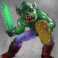

"Fear is of the unknown, and the unknown is all that exists below!"
- "Charnal", Apprentice to the Master Seeker
Exploring the dungeon would be completely boring unless there were monsters trying to terminate your existence. An encounter can either be peaceful (represented by a 'peace' sign) or hostile (represented by a skull and crossbones). If the encounter is peaceful, the monsters may decide to attack you eventually, so don't plan on sticking around the room for too long (a high Charisma will delay them from eventually attacking you). The first hostile act you take towards a group of monsters will cause them to become hostile towards you. This includes attacking monsters, casting a spell at the monsters, or attempting to open a monster's chest.
You may walk through any room containing monsters (either peaceful or at war). If you are peaceful, they will leave you alone as you walk through - this is often useful if your character is beat up or if you don't want to bother with small encounters. However, if you are at war, the monsters will try to terminate you as you maneuver through the room.
As you venture further into the dungeon, your character may have problems properly identifying monsters within the first few rounds. How long it takes for your character to recognize a monster depends on your characters Intelligence, Wisdom and Experience. After a few rounds, your character should be able to recognize the monster(s) properly.
Companions & Monsters offering to Join
Sometimes one or more monsters may offer to join you and become your companions. When they do offer to join, you can press 'j' to allow them to follow you.
Once a companion, a monster will fight for you in combat and will act as an alternative target for the monsters you are fighting. Your Charisma will determine how likely a monster is to join you and once joined, how long it is likely to stay around. You may heal and raise a companion just like it was another character. If you don't keep a companion at full hits there's a better chance that they will leave you.
Whenever a companion dies, you will automatically carry them - if they can be carried (ever tried to carry a giant or dragon?). If you pick up another character, you will drop any companion you might be carrying. If a companion dies and you are already carrying one, the companion with the most hits will be carried. A character will never drop a character to carry a dead companion.
For more information on Companions, see the Companions section later in this Helplesson
Additional Topics:
Move to the next section to read about Encounters and Monsters.
Move to the previous section to read about the AutoMap.
M1: "The Depths of Dejenol" is a Trademark of Decklin's Domain Ltd and is © Copyright 1994-2026 All Rights Reserved